Realização






Lavras agora vai pré-acelerar a sua Startup. Dez equipes, quatorze semanas de jornada e uma cidade inteira como campo de prova.
Realização



-
Um programa de pré-aceleração de startups executado pela Prefeitura Municipal de Lavras. Quatorze semanas para tirar uma ideia do papel e transformar em empresa de verdade. Dez equipes entram. Nenhuma sai igual.
49 aulas em 8 módulos na plataforma LAUNCH Digital, liberadas em blocos semanais. Você estuda no seu horário.
Encontros na Unilavras, das 19h às 21h: oficina prática e banca de pitch, toda semana.
Sete rodadas de mentoria individual online, uma a cada virada da jornada.
Acesso ao Vale dos Ipês, o ecossistema de inovação de Lavras: academia, governo, sociedade e setor privado na mesma mesa.
Demoday público de encerramento, com entrega de dois certificados independentes.
A porta não fecha no Demoday: quem conclui entra na rede do RAJA e pode pedir, em até um ano, uma agenda para apresentar seu pitch ao time de investimento deles. É uma oportunidade de apresentação, não uma promessa de investimento.
A grade
São 49 aulas organizadas em 8 módulos, liberadas em blocos semanais ao longo das 14 semanas. Cada módulo fecha com o estudo de caso de uma empresa real e com uma aplicação prática no seu próprio projeto.
Como a jornada funciona, o que se espera de cada equipe e integração com a turma e a plataforma.
Acordo de sócios, estrutura societária, contratos e propriedade intelectual. Estudo de caso: Uber.
Como descobrir se o problema que você resolve é real — e se alguém pagaria para resolvê-lo. Estudo de caso: Airbnb.
Canvas de proposta de valor, persona e segmentação de cliente. Estudo de caso: Nubank.
Como construir um pitch que sustenta a própria história e resiste a pergunta difícil. Estudo de caso: WeWork.
Metodologias ágeis, prototipagem, IA e no-code na prática. Estudo de caso: Dropbox.
Pipeline de vendas, aquisição, retenção e escala de clientes. Estudo de caso: Slack.
Precificação, unit economics, modelagem financeira e caminhos de fomento. Estudo de caso: Airbnb.
Quem faz acontecer?
Quem puxa o programa é a Superintendência de Políticas de Ciência, Tecnologia e Inovação da Prefeitura de Lavras — do edital à formatura, a cidade assume a conta e a condução. A metodologia é a do RAJA, que roda o Launch desde 2016 e já pré-acelerou 215 projetos em 9 edições. É o mesmo conteúdo, as mesmas mentorias e as mesmas bancas que rodam nos grandes centros — agora em Lavras, de graça, para dez equipes daqui.
-
Pré-aceleração boa não é sobre assistir aula. É sobre executar e ter que defender o resultado toda semana, na frente de quem vai te dizer a verdade. Este programa é para quem vai tocar um negócio — não para quem quer assistir a uma aula.
A Prefeitura paga a conta. Não há taxa de inscrição, mensalidade nem cobrança de qualquer valor, em nenhuma etapa — nem pelo Município, nem pelo parceiro, nem por terceiros.
Bancas de pitch semanais, com um avaliadores convidados. Em 14 semanas você se apresenta mais do que a maioria se apresenta em anos.
Tudo acontece em Lavras, na Unilavras. Você não precisa ir para um grande centro nem mudar de cidade para chegar perto de um programa desse nível — ele vem até aqui.
Diagnóstico, validação da dor de mercado, modelo de negócio, viabilidade financeira e curadoria do pitch — uma sessão online para cada virada da jornada.
O Certificado Municipal LVRS+, para quem registrar 75% de frequência e cumprir as entregas, e o certificado de conclusão da plataforma. Um não depende do outro.
Cada projeto selecionado recebe 3 licenças pessoais e vitalícias da plataforma LAUNCH Digital. Terminado o programa, o material continua seu.
Para não restar dúvida
O Launch LVRS+ não distribui prêmio em dinheiro, bolsa, auxílio, subvenção ou aporte, e não repassa recursos públicos às equipes. Não é competição: as dez equipes fazem a jornada inteira juntas, e ninguém é eliminado no meio do caminho. A propriedade intelectual do seu projeto continua 100% sua — o Município não adquire participação societária, direito de preferência, opção de compra nem royalties. O que você leva daqui é formação, rede e um negócio mais bem construído.
"Atingimos muito network e conseguimos o smart money através do investimento e de muitos contatos que foram compartilhados."
Laís Laine The Hub
"Recebemos nosso primeiro aporte, que nos permitiu investir em tecnologia, aquisição de clientes e gestão do negócio."
Gabriel Sousa M3 Lending
"Foi uma experiência incrível pra estruturar o negócio, ter novas conexões e conhecer o mercado."
Lucas Quaresma FXN Capital
Depoimentos de participantes de edições anteriores do Launch, realizadas em outras cidades e com regras próprias. A turma de Lavras ainda vai escrever a sua história.
-
Duas fases: 46 dias de inscrições abertas e, depois da seleção, quatorze semanas de programa.
A rotina da semana
Durante as 14 semanas, a jornada tem um ritmo fixo. Basta um integrante da equipe presente em cada atividade obrigatória — e a frequência mínima de 75% é o que garante o Certificado Municipal LVRS+.
Banca de pitch semanal, 19h às 21h, na Unilavras. Um avaliador convidado diferente a cada semana. Presença obrigatória.
Oficina prática, 19h às 21h. Mão na massa em cima do conteúdo do módulo da semana. Presença obrigatória.
Sexta do Vale: coworking aberto, office hours da Superintendência e networking — que costuma virar happy hour. Participação livre, não conta na frequência.
Um bloco de aulas liberado por semana, para estudar no seu ritmo, de onde estiver.
As mentorias
Cada equipe tem sete rodadas de mentoria individual online ao longo do programa, uma para cada virada da jornada:
Diagnóstico inicial do projeto e definição das metas da equipe para o programa.
Validação da dor de mercado com evidência, não com opinião.
Modelo de negócio e proposta de valor.
Leitura dos feedbacks da Banca 01 e replanejamento.
Viabilidade financeira e estratégia de captação.
Curadoria dos pitches de Demoday.
Ajuste final, individual, de cada pitch.
Inscrição
A inscrição é gratuita e feita por formulário eletrônico, até as 23h59 de 9 de outubro de 2026. Vale para equipes, não para pessoas sozinhas.
Quem pode se inscrever?
Pessoas físicas. Cada pessoa pode integrar apenas uma equipe, e cada equipe inscreve apenas um projeto.
O representante precisa morar em Lavras ou comprovar que o projeto é desenvolvido, sediado ou operado aqui. Os demais integrantes podem morar em qualquer lugar.
Ideação, validação, prototipagem, MVP ou operação inicial, com tecnologia como elemento central da solução. CNPJ não é exigido.
Faturamento de até R$ 1 milhão por ano e nenhum aporte de capital de risco acima de R$ 500 mil. O programa é para quem está começando.
É o mínimo de dedicação da equipe, com ao menos um integrante presente em cada atividade presencial obrigatória.
O representante precisa ter 18 anos ou mais. Quem tem 16 ou 17 pode integrar a equipe com autorização do responsável legal (Anexo VI).
O que enviar na inscrição?
Separe tudo antes de começar a preencher — o formulário leva cerca de 40 minutos e a inscrição só vale depois do envio definitivo.
Documento oficial com foto e CPF de cada integrante da equipe.
Comprovante de residência do representante, ou documento que comprove que o projeto opera em Lavras.
Em PDF, com no máximo 10 páginas. Páginas além da décima não são consideradas.
Link público de até 3 minutos. Confira se o link está aberto antes de enviar.
Anexos IV, V e IX assinados. E o Anexo VI, se houver integrante de 16 ou 17 anos.
Vídeo de apresentação da equipe, até 1 minuto. Não é obrigatório, mas conta pontos no critério Equipe.
Como a seleção funciona?
São quatro etapas, todas conduzidas pela Comissão de Seleção da Prefeitura, com decisões motivadas por escrito e publicadas no Diário Oficial do Município.
Preenchimento e envio do formulário com todos os documentos exigidos, até 9 de outubro.
Conferência objetiva dos requisitos. Aqui não se avalia mérito — só se a inscrição está completa e elegível.
Formulário, pitch deck e vídeo pontuados em sete critérios, num total de 100 pontos.
Entrevista online de até 20 minutos, para um número de equipes correspondente a até duas vezes o de vagas.
Como a nota é formada?
Problema e validação da dor de mercado.
Solução, inovação e uso de tecnologia.
Modelo de negócio e potencial de escala.
Equipe: competências, complementaridade e histórico.
Aderência ao objeto do edital e ao território de Lavras.
Disponibilidade e comprometimento com a jornada.
Clareza e consistência do pitch.
Nota mínima para classificação: 60 pontos. Zero em qualquer critério elimina a equipe. Em caso de empate, o edital dá preferência a projetos de distritos, zona rural e bairros periféricos, e a equipes lideradas por mulheres, pessoas negras, indígenas ou com deficiência.
Ainda não se sente pronto?
Se você não tem computador, internet ou familiaridade com formulário eletrônico, a Superintendência faz a inscrição junto com você, presencialmente ou à distância. Há formulário em meio físico e apoio a pessoas com deficiência. Ninguém fica de fora por falta de acesso.
Durante todo o período de inscrições acontecem encontros gratuitos e abertos ao público, sem precisar estar inscrito no edital — da primeira ideia ao MVP sem código. É por onde começar se o seu projeto ainda é só uma vontade.